16.U Base-Mounted Drum Hoists Used to Hoist Personnel, Guided and Non-Guided Worker's Hoists (Air Tuggers)
16.U–16.U.12
16.U Base-Mounted Drum Hoists Used to Hoist Personnel, Guided and Non-Guided Worker's Hoists (Air Tuggers). (Whether Powered by Internal Combustion Engine, Electric Motor or Other Prime Mover).
16.U.01 The use of this equipment to hoist personnel requires the development of a written Standard Operating Procedure (SOP). All personnel involved with the use of this equipment shall assist in the development of this SOP. The SOP shall be maintained for a period of no more than12 months, at which time it shall be reviewed and changed as necessary. All operators that will be hoisting personnel shall have a physical examination per 16.B.05 and shall be trained at a minimum, in the requirements listed in 16.U. and 16.T. > USACE operators shall also be trained as Class II operators per Section 16.C.05.
16.U.02 This equipment shall meet the applicable requirements for design, construction, installation, testing, inspection, maintenance and operations as required by the manufacturer, to include an 8:1 safety factor for the hoist rope. > See ASSE A10.22.
16.U.03 For operations within the scope of the ASSE A10.22 standard, a base mounted drum hoist (rope-guided) or non-rope guided hoists shall be used when hoisting personnel. The hoist shall be used in accordance with the manufacturer's recommendations for these applications.
16.U.04 The hoist machine shall meet all criteria set forth in ASSE A10.22, Chapter 4.
16.U.05 The operator of the hoist shall be qualified and instructed in the proper operation of the hoisting system, in accordance with manufacturer's recommendations.
16.U.06 The hoist may be used to hoist materials or personnel, but not both simultaneously.
16.U.07 An independent lifeline and a full body harness shall be provided and used by any person being transported. Personal fall protection is not required when fully enclosed baskets are used.
16.U.08 Voice communications shall be maintained between the hoist operator and each landing.
16.U.09 A minimum of two guide ropes (for rope-guided hoists) shall be used when transporting personnel in the cage. Splicing of the hoisting and guide ropes shall not be spliced except for the formation of end terminations.
16.U.10 A sign stating capacity in number of persons and rated loading in pounds shall be posted on the cage.
16.U.11 Inspection and Testing.
- Visual checks shall be conducted daily prior to use (during use).
- Inspections (no drop test) shall be conducted weekly when hoist is in continuous operation and before reuse following periods of idleness in excess of one week.
- Documentation at each job location shall be maintained and kept on file for at least 2 years.
16.U.12 Non-Guided Hoist for Personnel/Air tugger hoist. This equipment may be substituted for a base mounted drum hoist and in addition to the requirements above, must meet the following:
- Hoist shall be secured in position to prevent moving, shifting or dislodgement;
- Hoist machine may be operated at cable speeds not to exceed 110 ft/min when transporting personnel on a non-guided worker's hoist;
- An independent lifeline and a full body harness shall be provided and used by any person being transported by a non-guided hoist.
Personal fall protection is not required when fully enclosed baskets are used
.
- Rope grabs (fall prevention devices) for connecting a safety harness to the lifeline shall be of a type that can be attached to or detached from the independent lifeline. They shall be compatible with the lifeline size and type of material being used. Attachment to the lifeline shall be maintained at a point above waist height of the person. Other devices that provide equivalent safety may be used;
- Minimum wire rope diameter shall be 5/16 inch (7.9mm);
- Non-guided hoist line shall be weighted as necessary to prevent line run of the hoisting rope under the basket.
FORM 16-1
Certificate of Compliance for LHE and Rigging
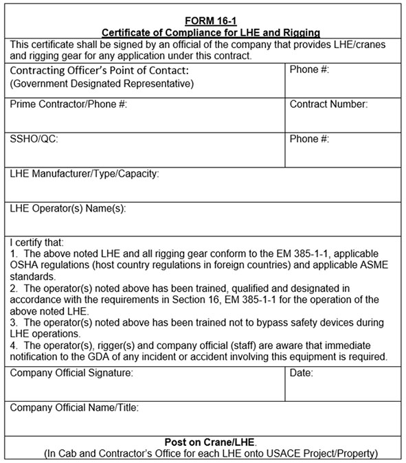
FORM 16-2
Standard Pre-Lift Crane Plan/Checklist
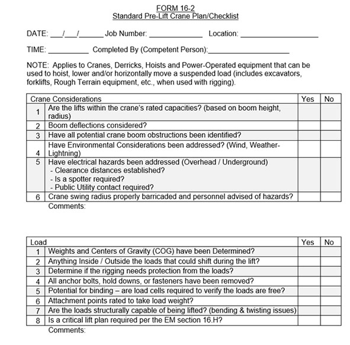
FORM 16-2 (Cont'd)
Standard Pre-Lift Crane Plan/Checklist
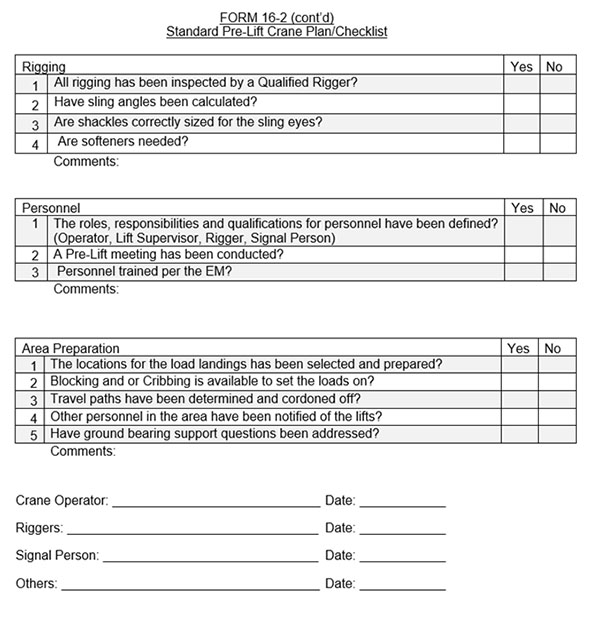
FIGURE 16-1
Crane Hand Signals
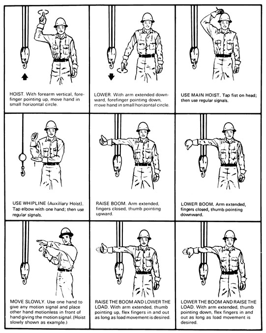
FIGURE 16-1 (Cont'd)
Crane Hand Signals
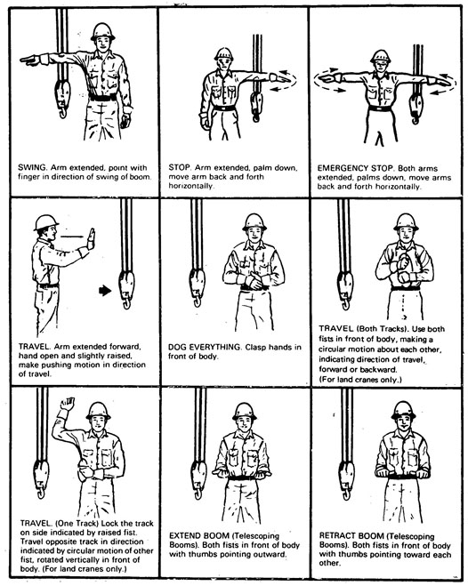
FIGURE 16-1 (Cont'd)
Crane Hand Signals
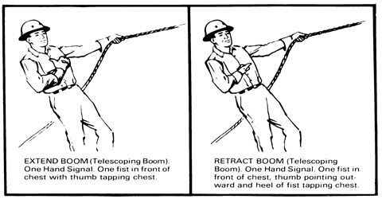
FORM 16-3
Critical Lift Plan
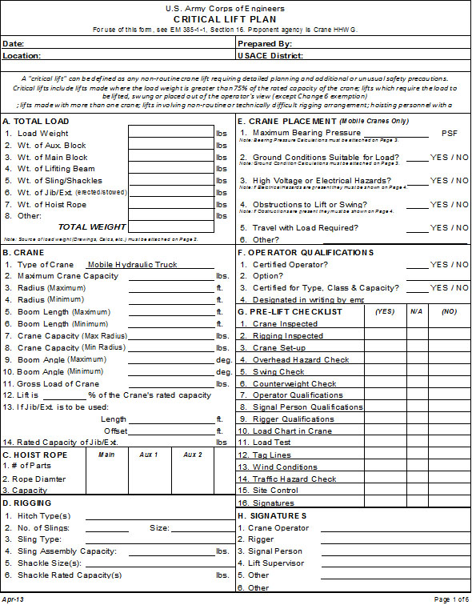
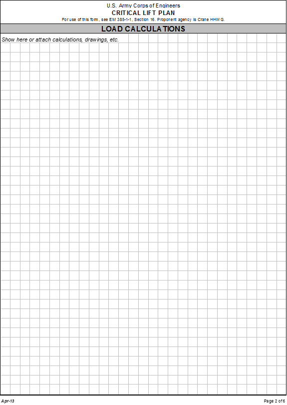
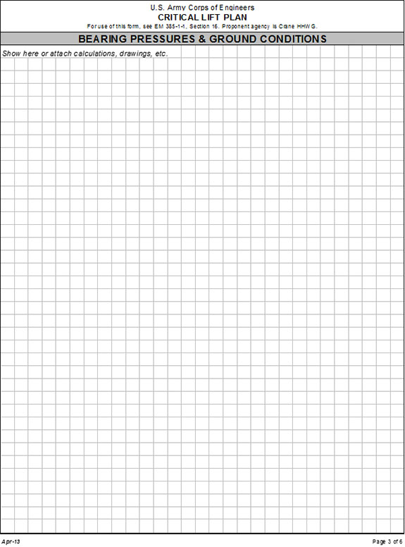
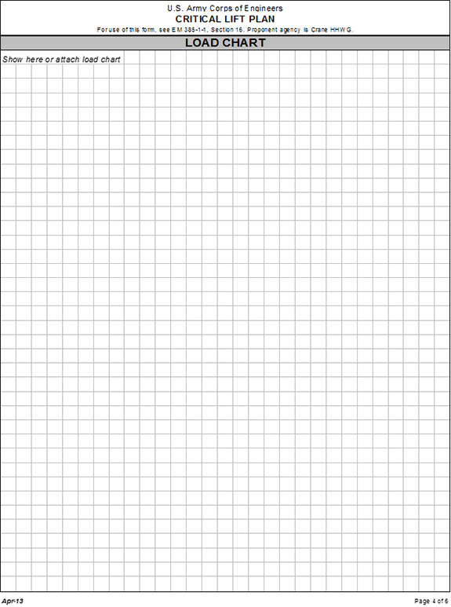
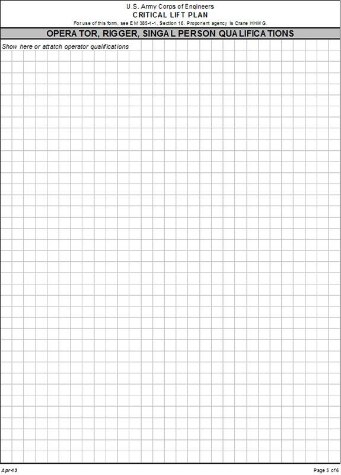
FIGURE 16-2
Dedicated Pile Driver, Example
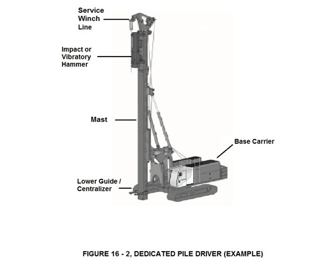
FIGURE 16-3
Non-Dedicated Pile Driver, Example
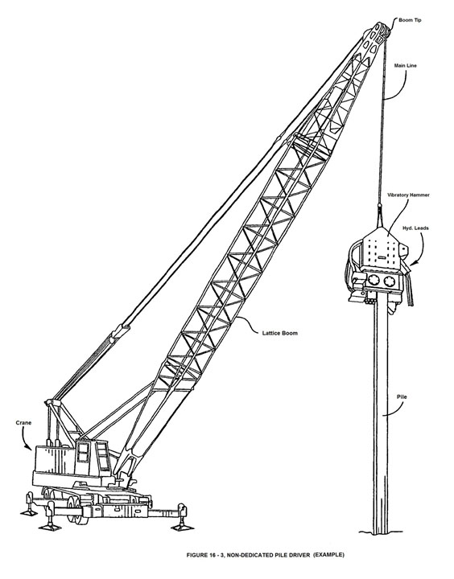
FIGURE 16-4
Crane Hand Signal – Overhead and Gantry
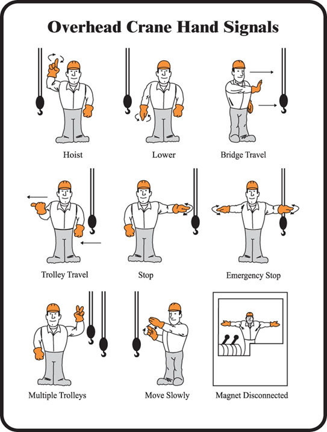
{kind=link}
{kind=link}
{kind=link}
{kind=link}
{kind=link}
{kind=link}
{kind=link}
{kind=link}
{kind=link}
{kind=link}
{kind=link}
{kind=link}
{kind=link}
{kind=link}
{kind=link}